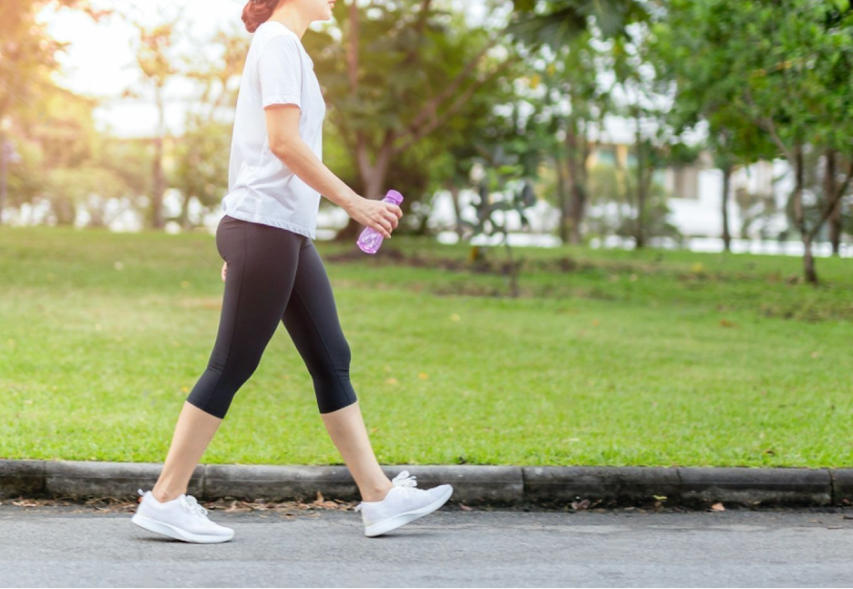
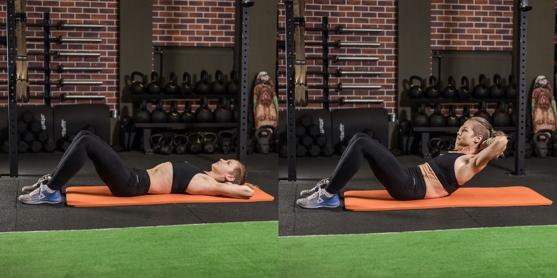
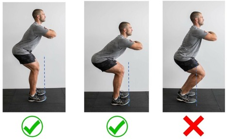
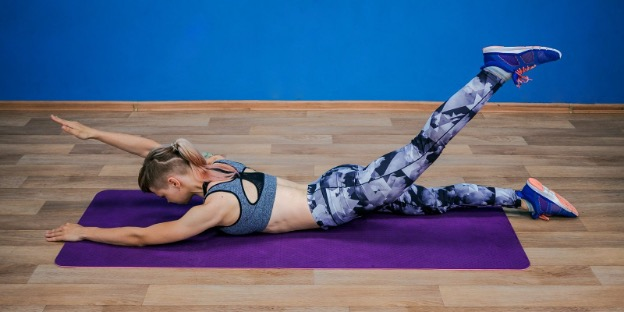

Hari ini kami memberi Anda kesempatan untuk mengikuti survei, yang hasilnya Anda akan menerima rencana penurunan berat badan yang dipersonalisasi secara gratis sesuai dengan metodologi unik dari dr Grace Judio-Kahl!
Siti Badriah, Ussy Sulistiawaty, Ivan Gunawan, Okky Lukman —dan ini belum lengkap semua dari mereka yang telah dibantu oleh Dr. Grace Judio-Kahl untuk menurunkan berat badan. Cukup dalam 5 menit, Anda dapat memiliki rencana menurunkan berat badan pribadi dari ahli gizi selebriti.
Menurunkan berat badan bisa sangat sulit. Sangat mudah untuk jadi kebingungan karena di mana-mana ada banyak judul berita tentang berbagai macam diet dan alat bantu penurunan berat badan dan pembakar lemak. Mengapa itu semua tidak ada hasilnya? Faktanya adalah setiap orang membutuhkan pendekatan individu. Hanya dengan pendekatan pribadi, proses penurunan berat badan akan efektif, dan kelebihan berat itu tidak akan kembali setelah sebulan.
Berdasarkan hasil tes ini, salah satu ahli gizi terbaik di Indonesia akan menyusun rencana penurunan berat badan yang disesuaikan untuk Anda, yang dijamin akan memberikan hasil yang nyata hanya dalam beberapa hari!
Dr Grace Judio-Kahl adalah seorang ahli fisiologi, gaya hidup dan manajemen berat badan yang telah membantu lebih dari 100.000 wanita dan pria di Indonesia untuk menemukan keselarasan dengan diri mereka sendiri dengan mengembangkan rencana penurunan berat badan yang sesuai dengan kebutuhan mereka!
Seorang spesialis gaya hidup, ahli perilaku, ahli pengendalian berat badan, dan ahli fisiologi. Dia berspesialisasi dalam manajemen berat badan, obesitas, dan gangguan makan seperti kebiasaan ngemil yang buruk, gangguan makan larut malam, bulimia, dan sebagainya.
Dia juga menyusun metode pribadi yang telah membantu ratusan ribu wanita dan pria di Indonesia untuk menurunkan berat badan.
Bonus setelah lulus tes: Rencana penurunan berat badan individu
Dapatkan penawaran yang dipersonalisasi dari ahli gizi terkenal Grace Judio-Kahl
Ikuti tes dan dapatkan rencana penurunan berat badan yang dipersonalisasi
Bonus setelah menyelesaikan tes:
Isi detail Anda
Jajak pendapat: cara menurunkan berat badan dengan mudah dan cepat. 5 menit untuk menentukan teknik penurunan berat badan individu
Program penurunan berat badan pribadi Anda
🆘 🆘
BMI anda:
Saat ini berat badan Anda: kg
Berat badan target Anda: kg
Anda perlu menurunkan berat badan: kg
Berat anda ialah: kg 23.7.2023
Rencana individual Anda akan mencakup rencana yang dirancang khusus untuk program ini SlimMax. Anda dapat mengunduh rencana penurunan berat badan individual di bawah ini.
Formula SlimMax diciptakan di sebuah pusat penelitian di Jakarta khusus untuk untuk orang yang kelebihan berat badan. Mengandung bahan-bahan alami yang:
Dengan menggunakan SlimMax ini, Anda bisa mendapatkan hasil hanya dalam waktu 1 bulan:
👉 SlimMax - produk inovatif untuk penurunan berat badan yang memungkinkan Anda mencapai hasil yang diinginkan dengan cepat dan tanpa membahayakan kesehatan.
📈 Grafik unik kami akan menunjukkan bagaimana Anda secara bertahap mendekati target.
Tidak peduli berat badan awal Anda, Anda dapat kehilangan sekitar 30% dari berat badan berlebih dalam seminggu. Dalam waktu empat minggu, Anda akan mencapai bentuk tubuh yang diinginkan.
🌿 Minggu 1: Pembersihan tubuh
Membersihkan tubuh dari racun dan limbah, membantu mempersiapkan tubuh untuk turun berat badan secara otomatis. Formula ini juga meningkatkan fungsi sistem pencernaan dan meningkatkan metabolisme.
🍏 Minggu 2: Memperkuat sistem pencernaan
Formula ini meningkatkan kinerja sistem pencernaan, sehingga memungkinkan penyerapan nutrien yang lebih baik serta meningkatkan metabolisme. Selain itu, formula ini juga memperkuat mikroorganisme dalam usus dan memulihkan fungsi normal perut.
🔥 Minggu 3: Peningkatan metabolisme
Fase penurunan berat badan aktif. Peningkatan metabolisme dan memperbanyak jumlah energi yang dikonsumsi. Penurunan volume lemak tubuh, menurunkan berat badan secara otomatis.
👍🏼 Minggu 4: Mempertahankan hasil yang telah dicapai
Mencegah berat badan kembali naik dan memblokir efek yoyo. Metabolisme telah sepenuhnya terbentuk. Peningkatan untuk kondisi tubuh secara keseluruhan dan mengurangi risiko penyakit yang berhubungan dengan obesitas.
Program pelatihan dan gizi untuk mendapat hasil permanen. Berat badan turun dalam 30 hari berkat "SlimMax".
Tips Program: Program ini mencakup saran-saran tentang program aktivitas fisik dan gizi selama program berlangsung. Jika Anda mengikuti petunjuk program ini, maka Anda berpotensi turun berat badan hingga 20 kg dalam satu bulan.
*Program ini disusun dengan bantuan produsen produk pembakar lemak "SlimMax". Hasil disajikan ketika "SlimMax" digunakan. Rencana ini disusun oleh ahli gizi di Pusat Penelitian di Jakarta.
Apa pun yang Anda makan atau seberapa sering Anda berolahraga, Anda dapat mengikuti rekomendasi dari rencana yang dibuat untuk Anda, atau hanya menggunakan "SlimMax", tanpa mengubah gaya hidup Anda. Namun Anda akan melihat bahwa kemajuan Anda sedikit lebih lambat dibandingkan dengan jika mengikuti program. Dalam hal ini, Anda bisa turun hingga 11 kg per bulan.
Menurut survei di antara lebih dari 100.000 pengguna "SlimMax", produk ini menunjukkan efisiensi tinggi sebagai berikut:
- Pencernaan menjadi normal: 97% responden
- Energi muncul, tidur membaik: 95% responden
- Berhasil menurunkan berat badan: 99% responden
- Berat yang dicapai tetap bertahan selamanya: 95% responden
Isi program:
- Pendahuluan
- Tingkat latihan minimal
- Rekomendasi gizi
- Makanan dan minuman merusak yang harus dihindari
- Tabel hasil
1) Pendahuluan
Program ini dirancang untuk jangka waktu satu bulan dan tidak hanya mencakup daftar latihan, tetapi juga tips tentang gizi yang tepat. Jika Anda mengikuti semua petunjuk yang diberikan, Anda bisa turun hingga 15 kg dalam satu bulan. Kesehatan Anda tidak akan terganggu dan Anda hanya akan kehilangan lemak, bukan air atau otot. Jadi, pada akhirnya Anda akan menyingkirkan kelebihan berat badan Anda.
2) Tingkat latihan minimal
Pilihan terbaik untuk tubuh Anda adalah berolahraga setiap dua hari sekali. Jangan berlebihan—aktivitas 30-50 menit per hari sudah cukup untuk memperkuat otot dan mulai membakar lemak. Anda memerlukan aktivitas fisik tingkat sedang, karena melakukan olahraga keras, terutama tanpa persiapan yang diperlukan, dapat berdampak buruk bagi kesehatan.
Pemanasan:
- Lari lambat di tempat
- Memutar torso ke kanan dan ke kiri
- Squat (10-15 kali)
- Ayunan lengan bebas
Dianjurkan melakukan pemanasan setidaknya selama 5-8 menit sebelum latihan.
Latihan dasar:
1. Berjalan atau berlari 5 km/berenang 1 jam
Jika pergi ke kolam renang membuat Anda tidak nyaman, Anda bisa memprioritaskan lari atau jalan kaki. Tidak masuk akal untuk mulai berjalan dengan jarak sejauh maraton secara teratur dengan langkah cepat.
Nanti, ketika berjalan sudah berubah menjadi sesuatu yang menyenangkan, Anda dapat meningkatkan jarak dan kecepatan. Jangan terburu-buru menambah beban – yang penting adalah membuat pikiran Anda senang dengan inisiatif yang baik ini alih-alih membuat takut. Dua hari menempuh jarak 5 km jauh lebih baik daripada berpacu sejauh 15 km dan berhenti total setelahnya karena penolakan. Jangan abaikan jalan kaki sebagai olahraga rutin.
2. Sit up—2 set dengan 10 repetisi
Luruskan lengan Anda ke atas kepala atau pegang di belakang kepala. Buang napas, kencangkan perut, dan tahan napas. Pegang kepala, bahu, dan tulang belikat Anda menjauh dari lantai, biarkan punggung bagian bawah menempel ke tanah. Perlahan kembali ke posisi awal dan ulangi.
3. Squat—3 set dengan 15 repetisi
Untuk melakukan squat standar, Anda harus menjaga punggung tetap lurus. Kemudian mulailah menurunkan pinggul Anda secara perlahan hingga sejajar atau hampir sejajar dengan lantai. Pada posisi terendah, berhenti, tahan tubuh selama 1-2 detik sambil mengembuskan napas dan kembali ke posisi awal.
4. Angkat lengan-kaki—3 set 16 repetisi
Jaga keseimbangan, luruskan punggung dan pada saat yang sama secara perlahan angkat kaki kiri dan lengan kanan hingga sejajar dengan lantai. Jeda, perlahan kembali ke posisi awal dan ulangi latihan di sisi yang berlawanan. Lakukan latihan secara perlahan, tanpa bantuan momentum, hanya menggunakan kekuatan dan kerja otot.
3) Rekomendasi diet:
5 aturan gizi utama:
- Konsumsi 2 gram protein per kilogram berat badan per hari. Protein akan membantu mengurangi rasa lapar dan menjaga massa otot dalam proses penurunan berat badan.
- Batasi atau hilangkan sama sekali gula dan manisan, roti putih, dan kue kering.
- Konsumsi lebih banyak serat dari buah-buahan, sayuran, dan biji-bijian.
- Minum segelas air putih 30 menit sebelum makan.
- Kurangi asupan kalori Anda.
Aturan “seperempat, seperempat, setengah” adalah cara mudah untuk mengingat proporsi yang benar dari setiap kelompok makanan untuk mencapai makanan yang seimbang. Caranya adalah:
- Isi seperempat piring Anda dengan beras-berasan utuh
- Isi seperempat piring Anda dengan sumber protein yang baik
- Isi setengah piring Anda dengan buah-buahan dan sayuran
Rencana makan 5 hari
| № | Sarapan | Camilan pertama | Makan siang | Camilan kedua | Makan malam |
|---|---|---|---|---|---|
| 1 | Oatmeal dan beberapa buah/kacang kering, susu rendah lemak dan buah-buahan. | Buah atau kerupuk dengan keju krim | Sup dengan ayam dan sayuran. Salad sayuran dengan minyak zaitun | Dua potong roti sereal dengan teh atau jus tanpa pemanis | Lada Bulgaria, nasi dengan daging sapi cincang. Tomat ceri dan sejumlah sayuran hijau. |
| 2 | Salad sayuran dengan minyak zaitun dan sepotong roti gandum. | Keju cottage bebas lemak, buah beri segar atau beku. | Brokoli panggang dengan ikan. Selada segar. | Kue oatmeal, teh hijau | Fillet ikan dengan sayuran. Yogurt tawar. |
| 3 | Bubur oatmeal dengan kismis. | Satu gelas jus segar dan dua sereal. | Dada ayam rebus dengan nasi. Salad sayuran ringan. | Yogurt tawar, roti diet. | Ikan bakar atau rebus. Salad hijau dengan saus jus lemon. |
| 4 | Soba rebus dengan satu sendok makan minyak sayur | Satu apel, yogurt. | Daging dan kentang kukus. Salad sayuran. | Satu buah atau sayuran pilihan Anda | Ikan dengan nasi, sepiring sayuran pilihan Anda |
| 5 | Sandwich telur goreng dengan tomat, keju, dan roti hitam | Buah atau kerupuk. | Sup vegetarian. Salad sayuran dengan saus minyak zaitun. | Yogurt, beberapa kue gandum | Telur dadar dua protein dengan susu, tomat, dan daun bawang |
Anda dapat mengubah rencana dan membuatnya sendiri dengan syarat utama adalah mempertahankan buah-buahan, produk susu, biji-bijian, sereal, ikan, dan ayam tetap ada dalam makanan Anda.
4) Masih ada aturan tertentu yang harus Anda ikuti:
1. Singkirkan garam. Garam akan menahan air di dalam tubuh, yang akan memperlambat efek.
2. Cobalah untuk tidak menggunakan saus yang dibeli dari toko. Saus semacam itu tinggi kalori dan penuh dengan bahan tambahan buatan. Percayalah, membuat saus sendiri jauh lebih sehat dan menyenangkan!
3. Minum teh hijau, jus buah dan sayuran. Jangan terlalu banyak minum kopi, jus yang dibeli di toko, dan teh dengan gula. Juga, minum alkohol sesedikit mungkin, karena tinggi kalori dan membangkitkan nafsu makan.
5) Tabel hasil tes.
Sekitar 98% subjek uji telah mencapai hasil penurunan berat badan yang signifikan. Anda dapat melihat hasil rata-rata untuk program ini pada tabel di bawah ini.
50.000 orang (pria dan wanita) ikut serta dalam pengujian SlimMax.
Pria
| Berat | Minggu ke-1 | Minggu ke-2 | Minggu ke-3 | Minggu ke-4 |
|---|---|---|---|---|
| 60-70 kg | 3-5 kg | 3-5 kg | 4-5 k | 3-6 kg |
| 70-80 kg | 3-6 kg | 3-7 kg | 4-8 k | 4-8 kg |
| 80-100 kg | 4-9 kg | 5-9 kg | 6-9 k | 6-9 kg |
| 100-120 kg | 5-9 kg | 5-9 kg | 6-9 k | 4-6 kg |
| 120-160 kg | 5-9 kg | 5-8 kg | 6-10 k | 6-9 kg |
Wanita
| Berat | Minggu ke-1 | Minggu ke-2 | Minggu ke-3 | Minggu ke-4 |
|---|---|---|---|---|
| 50-60 kg | 2-4 kg | 2-5 kg | 2-3 k | 2-3 kg |
| 60-70 kg | 3-5 kg | 3-5 kg | 4-5 k | 3-6 kg |
| 70-90 kg | 4-9 kg | 5-9 kg | 5-9 k | 5-8 kg |
| 90-100 kg | 5-9 kg | 5-9 kg | 6-9 k | 4-6 kg |
| 100-140 kg | 5-9 kg | 5-8 kg | 6-10 k | 6-9 kg |
Untuk memvisualisasikan hasil, kami menyarankan Anda untuk mengisi tabel setiap minggu. Jadi Anda bisa mengevaluasi dan mengamati efeknya. Selanjutnya, untuk tujuan klarifikasi, Anda dapat mengambil gambar profil, melihat bagaimana kelebihan berat badan dibakar di depan mata Anda sendiri dengan bantuan SlimMax. Semoga Anda sukses!
Formula SlimMax tersebut dibuat di Jakarta Research Center khusus untuk orang yang kelebihan berat badan. Produk SlimMax inovatif ini sangat diminati oleh para bintang terkenal dunia dan orang-orang yang ingin menurunkan berat badan. Akibatnya, kuantitas SlimMax di pasaran menjadi terbatas.
Kami merekomendasikan untuk membeli SlimMax sesegera mungkin untuk memanfaatkan peluang untuk mencapai hasil penurunan berat badan yang diinginkan dengan cepat dan efektif. Khusus untuk Anda, kami memberikan diskon 50% setelah mengisi tes ini.
* File dengan rekomendasi pribadi dan rencana gizi/olahraga akan segera ditampilkan setelah mengisi formulir. Anda dapat mengunduhnya dan memulai program Anda hari ini.